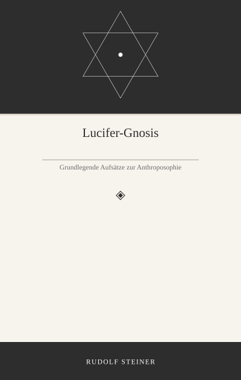
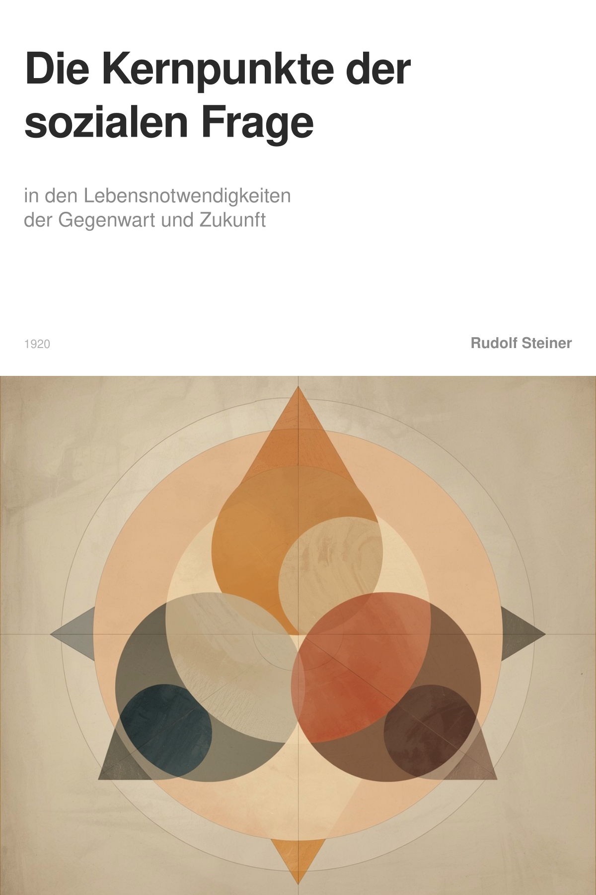

Mensch
Steiner schreibt: "Auf dem Gebiet des Geisteslebens wird die Möglichkeit entstehen, dass dessen Hervorbringer von den Erträgnissen ihrer Leistungen auch leben. Was jemand für sich im Gebiet des Geisteslebens treibt, wird seine engste Privatsache bleiben; was jemand für den sozialen Organismus zu leisten vermag, wird mit der freien Entschädigung derer rechnen können, denen das Geistesgut Bedürfnis ist. Wer durch solche Entschädigung innerhalb der Geistesorganisation das nicht finden kann, was er braucht, wird übergehen müssen zum Gebiet des politischen Staates oder des Wirtschaftslebens." Was sind "Erträgnisse ihrer Leistungen"? Wer bezahlt das? Was bedeutet "nicht finden kann, was er braucht"?
Philo von Freisinn
Die zitierten Sätze beschreiben das Prinzip der Finanzierung innerhalb eines freien Geisteslebens, wie es in der Idee der sozialen Dreigliederung vorgesehen ist .
1. „Erträgnisse ihrer Leistungen“
Damit sind die Einkünfte gemeint, die jemand aus seiner geistigen Tätigkeit (z.B. als Künstler, Lehrer, Forscher) erzielt. Diese entstehen nicht durch staatliche Gehälter oder wirtschaftliche Löhne, sondern durch eine freie Entschädigung seitens derjenigen, die das geistige Gut als ihr Bedürfnis empfinden und es nachfragen . Die Leistung wird also direkt von ihren Nutzern oder Förderern honoriert. Ein solches System setzt voraus, dass das Geistesleben ein eigenständiges, vom Staat und der Wirtschaft unabhängiges Gebiet ist, in dem sich die menschlichen Fähigkeiten frei entfalten können .
2. Wer bezahlt das?
Die Bezahlung erfolgt durch die Gemeinschaft derjenigen, für die die geistige Leistung ein Bedürfnis darstellt. Das können Einzelpersonen, Personengruppen oder Assoziationen sein. Die Quelle präzisiert, dass in einem freien Geistesleben die Kapitalverwaltung zu einem „Ergebnis der geistigen Kraftentfaltung“ wird. Das bedeutet, dass Kapital (hier im Sinne von Finanzmitteln für geistige Arbeit) dorthin fließt, wo produktive geistige Fähigkeiten wirken. Die Gesellschaft sorgt durch ihre Nachfrage und freiwillige Zuwendung dafür, dass fruchtbare geistige Tätigkeit auch existenzsichernd sein kann.
3. „nicht finden kann, was er braucht“
Dies bedeutet, dass die freien Entschägnisse aus dem Geistesleben für die Lebenshaltung einer Person nicht ausreichen. Wenn jemand von seiner geistigen Tätigkeit im freien Kreislauf des Geisteslebens nicht leben kann, muss er seine Betätigung wechseln. Er tritt dann in das Rechtsleben („politischer Staat“) ein, wo er etwa ein besoldetes Amt übernimmt, oder in das Wirtschaftsleben, wo er für seine Arbeit ein marktübliches Einkommen erhält. Diese klare Trennung der Lebensgebiete soll sicherstellen, dass jedes Gebiet nach seinen eigenen Gesetzen funktioniert: das Geistesleben aus Freiheit und innerem Antrieb, das Rechtsleben aus Gleichheit und das Wirtschaftsleben aus brüderlicher Assoziation . Die Notwendigkeit eines solchen Übertritts unterstreicht, dass das Geistesleben nicht künstlich alimentiert, sondern von der lebendigen Wertschätzung der Gemeinschaft getragen werden soll .
[1] WAHRE AUFKLÄRUNG ALS GRUNDLAGE SOZIALEN DENKENS
WAHRE AUFKLÄRUNG ALS GRUNDLAGE SOZIALEN DENKENS
[2]bedürfnis
Bedürfnis
Im Kontext der von Rudolf Steiner dargestellten philosophiegeschichtlichen Betrachtungen erscheint der Begriff des Bedürfnisses in einem charakteristischen Spannungsfeld. Einerseits wird er als ein treibender, subjektiver Faktor beschrieben, der das reine Erkennen trüben kann. In der Darstellung von Spinozas Position heißt es, dass Unlustempfindungen und die daraus entspringenden Begierden und Leidenschaften aus Ideen stammen, die von der Wahrnehmungswelt herrühren. Der Mensch könne zum Sklaven dieser Leidenschaften werden. Das höchste Glück und die adäquate Erkenntnis lägen demnach gerade im Leben in den reinen Vernunftideen, also in einer Erkenntnistätigkeit, die sich von der bloßen Befriedigung solcher subjektiver Bedürfnisse löst.
Andererseits zeigt die Darstellung der Gedanken Carneris eine positive, entwicklungsfördernde Seite der menschlichen Antriebe. Die Natur führe das Leben nur bis zu einem Punkt; mit dem Erwachen des Selbstbewusstseins beginne das eigentliche Werk des Menschen. Seine weitere Entwicklung sei sein eigenes Werk, angetrieben durch „die Macht und allmähliche Klärung seiner Wünsche“. Der Mensch habe den Trieb in sich, sein Dasein seinen Wünschen entsprechend zu gestalten – den Glückseligkeitstrieb. Dieses Streben nach Glück liege allem Handeln zugrunde, auch dem des Märtyrers. Entscheidend ist hier die Vorstellung, dass der Mensch seine Bedürfnisse und Wünsche nicht nur passiv erleidet, sondern sie in sein bewusstes Wollen aufnehmen, klären und zum Motor seiner ethischen und persönlichen Fortentwicklung machen kann.
Zusammengefasst erscheint das Bedürfnis somit als eine grundlegende menschliche Tatsache, die einerseits als subjektiver Störfaktor für die reine Erkenntnis überwunden werden muss, andererseits aber als gestaltbarer Antrieb die Grundlage für die bewusste, freie Entwicklung der menschlichen Persönlichkeit bildet.
[3]DREIGLIEDERUNG UND SOZIALES VERTRAUEN (KAPITAL UND KREDIT)
[4]organismus
Organismus
Bei Rudolf Steiner bezeichnet der Begriff „Organismus“ eine lebendige Ganzheit, die mehr ist als die bloße Summe ihrer Teile. Diese Ganzheit ist durch eine innere, geistige Gesetzmäßigkeit geprägt, die sich in einer spezifischen Gliederung und im Zusammenwirken selbstständiger Systeme offenbart. Im naturwissenschaftlichen Verständnis, das Steiner von Goethe übernimmt, erscheint der konkrete, einzelne Organismus als besondere Ausprägung eines zugrundeliegenden allgemeinen Bildes, des „Typus“. Dieser Typus ist die lebendige Idee des Organischen, die allen besonderen Formen innewohnt und ihren inneren Zusammenhang stiftet. Er ist kein starres Schema, sondern ein flüssiges, gestaltendes Prinzip.
Dieses Denkprinzip überträgt Steiner auf das soziale Leben. Der soziale Organismus ist ebenso gegliedert wie der natürliche. Entscheidend ist, dass seine wesentlichen Systeme – insbesondere das wirtschaftliche Leben und das politisch-rechtliche Leben – in voller Selbstständigkeit nebeneinander bestehen und nach ihren eigenen, innewohnenden Kräften und Gesetzen wirken müssen. Ein heilsames Zusammenwirken ist nur möglich, wenn jedes Glied seine eigene Gesetzgebung und Verwaltung hat und diese lebendig kooperieren. Eine Vermischung oder Unterordnung eines Systems unter ein anderes zerstört dessen Lebenskräfte, analog dazu, dass im Körper nicht die Lunge die Aufgabe des Denkens übernehmen kann.
Damit wird die Idee des Organismus zur Grundlage für ein Gesellschaftsmodell, das auf der freien Entfaltung und dem bewussten, lebendigen Zusammenwirken eigenständiger Glieder beruht.
[5]
GEISTESWISSENSCHAFT UND SOZIALE FRAGE
[6]SECHSTER VORTRAG Dornach, 29. Juli 1922
[7] DER MODERNE MENSCH UND SEINE WELTANSCHAUUNG
DER MODERNE MENSCH UND SEINE WELTANSCHAUUNG
[8]DREIGLIEDERUNG UND SOZIALES VERTRAUEN (KAPITAL UND KREDIT)
[9]DREIGLIEDERUNG UND SOZIALES VERTRAUEN (KAPITAL UND KREDIT)
Mensch
Aber das muss auch erst gelernt sein. Zum Beispiel war das OpenSSL-Projekt chronisch unterfinanziert und deswegen konnte sich dort ein fataler Fehler einschleichen, eine Schwachstelle, die es ermöglichte, dass Menschen in Computern überall eindringen konnten und Daten entwenden. Bei Facebook wurden zum Beispiel von der Hauptseite Nutzerinformationen gestohlen. Der Heartbleed genannte Fehler, weil er in dem sogenannten Heartbeat (Lebenszeichen) der Software auftrat, sorgt für weltweite Ausfälle. Danach wurde eine Organisation aufgebaut, von sehr kapitalistischen Firmen, die solche Unterfinanzierung aufspüren und beheben sollten. In der Dreigliederungsidee wären die beiden Entwickler, die das Projekt nebenbei betreuten, durch freie Wertschätzung finanziert worden, oder nicht? Aber wie kommt man dort hin, dass nicht solche Katastrophen passieren? Oder sind es gerade die Katastrohen, die uns hier lernen lassen?
Philo von Freisinn
Die von dir beschriebene Situation des OpenSSL-Projekts veranschaulicht ein zentrales Problem, das die Dreigliederungsidee zu lösen sucht: die chronische Fehlsteuerung und Unterfinanzierung geistiger Leistungen, wenn diese in den falschen sozialen Organismus eingebunden sind.
In der Idee der Dreigliederung ist das Geistesleben – wozu auch Softwareentwicklung als geistige Schöpfung gehört – ein selbstverwalteter und eigenständiger Bereich . Seine Finanzierung soll nicht aus dem Wirtschaftskreislauf (durch Lohn) oder dem Rechtsleben (durch Staatszuschuss) kommen, sondern durch freie Entschädigung derjenigen, die die geistige Leistung als ihr Bedürfnis anerkennen . Die beiden Entwickler wären demnach nicht „nebenbei tätig“, sondern ihre Arbeit wäre der eigentliche Ort ihrer Existenzsicherung, sofern die Gemeinschaft ihren Beitrag wertschätzt und entsprechend honoriert.
Die Katastrophe wie „Heartbleed“ entsteht laut der Dreigliederungslogik genau dann, wenn diese klare Trennung und Eigenständigkeit nicht besteht. Das geistige Produkt (Sicherheitssoftware) wird hier zu einer kritischen Infrastruktur der Wirtschaft, bleibt aber in seiner Erzeugung und Pflege einem System überlassen, das es nicht angemessen trägt – einer Mischform. Die Folge ist Unterfinanzierung und Vernachlässigung. Die spätere Reaktion – die Gründung einer Organisation durch „sehr kapitalistische Firmen“ – ist aus dieser Sicht ein typischer, aber unzulänglicher Reparaturversuch des alten Systems. Er bekämpft ein Symptom, ohne die zugrundeliegende Fehlorganisation zu beheben, nämlich die Vermengung von geistiger Schöpfung mit wirtschaftlichen und machtpolitischen Interessen .
Die Frage, wie man zu einem Zustand kommt, in dem solche Katastrophen vermieden werden, führt zum Kern der Dreigliederungsidee. Sie ist keine bloße Utopie, sondern eine Antwort auf eine historische Notwendigkeit. Die Quellen betonen, dass die „Weltkatastrophe“ (der Erste Weltkrieg) selbst das Ergebnis einer verhängnisvollen „Zusammenknäuelung“ der Lebensgebiete war . Die alten Denkgewohnheiten und Praktiken, die diese Vermischung aufrechterhalten, haben sich als zerstörerisch erwiesen . Der Weg hin zu einer gesunden Gliederung beginnt daher mit der Einsicht in dieses Versagen. In diesem Sinne sind Katastrophen wie „Heartbleed“ – als kleinere Abbilder der großen historischen Katastrophe – tatsächlich Lernanlässe. Sie zeigen auf schmerzhafte Weise, dass die bisherigen Organisationsformen für geistige Leistungen im digitalen Zeitalter untauglich sind.
Die konkrete Umsetzung erfordert nach den Quellen eine bewusste und ganzheitliche Neugestaltung. Einzelne Maßnahmen wie Betriebsräte oder Stiftungsgründungen, die von Partikularinteressen (Parteien, Einzelfirmen) „abgeschnürt“ werden, schaffen nach dieser Auffassung nur neues Unheil . Stattdessen muss die Einsicht in die Notwendigkeit der Trennung und Eigenständigkeit des Geisteslebens allgemein werden. Erst wenn diese Einsicht zur „Überzeugung“ gereift ist, kann sie die nötige „Arbeitsbereitschaft“ und die entsprechenden sozialen Formen – wie ein funktionierendes System freier Entschädigung für geistige Güter – hervorbringen .
Zusammenfassend: Die Dreigliederungsidee bietet das Prinzip zur Vermeidung solcher Katastrophen: die Befreiung des Geisteslebens in die Selbstverwaltung und Finanzierung durch freie Assoziation. Der Weg dorthin wird nach den vorliegenden Quellen durch das schmerzhafte Scheitern der alten, vermischten Formen gebahnt. Die Lernfrage ist daher nicht nur technischer oder finanzieller, sondern vor allem erkenntnismäßiger und willensmäßiger Natur.
[1]DER WEG DES «DREIGLIEDRIGEN SOZIALEN ORGANISMUS»
[2]DIE ZEITFORDERUNGEN VON HEUTE UND DIE GEDANKEN VON GESTERN
[3]
V. ANHANG An das deutsche Volk und an die Kulturwelt!
[4]ZUR ANGELEGENHEIT DER BETRIEBSRÄTE
[5]ERSTER VORTRAG Zürich, 24. Oktober 1919
[6]INTERNATIONALE WIRTSCHAFT UND DREIGLIEDRIGER SOZIALER ORGANISMUS
[7]organisation
Organisation
Im Denken Rudolf Steiners bezeichnet Organisation das Prinzip einer lebendigen, zweckmäßigen Gliederung eines Ganzen, in dem die Teile in wechselseitiger Beziehung stehen und gemeinsam eine höhere Funktion erfüllen. Dieses Prinzip findet seine entscheidende und konkreteste Anwendung in der Idee des „sozialen Organismus“.
Die moderne Gesellschaft wird hier nicht als einheitlicher, zentral gesteuerter Staatskörper verstanden, sondern als ein sich selbst regulierendes Ganzes, das aus drei eigenständig verwalteten Lebensgebieten besteht: dem Geistesleben (einschließlich Bildung und Kultur), dem Rechtsleben (das auf der Gleichheit aller vor dem Gesetz beruht) und dem Wirtschaftsleben (das sich ausschließlich mit Gütererzeugung, -verteilung und -verbrauch befasst). Eine gesunde soziale Organisation entsteht erst, wenn diese drei Glieder in voller Selbstständigkeit und aus ihren eigenen Gesetzmäßigkeiten heraus wirken und frei zusammenwirken können, ähnlich wie die Organe eines natürlichen Lebewesens.
Insbesondere für das Wirtschaftsleben bedeutet diese organisatorische Einsicht die strikte Ablehnung jeder zentralistischen Staatsverwaltung. Nur eine von politischen und geistigen Einflüssen freigestellte, assoziative Wirtschaftsorganisation kann die notwendige freie Initiative, Schnelligkeit und Anpassungsfähigkeit für einen funktionierenden, auch internationalen Wirtschaftsverkehr entwickeln. Jeder Versuch, große Wirtschaftsgenossenschaften zentral zu verwalten, hemmt diese freie Entfaltung und führt zu unpraktikablen, lebensfeindlichen Verwaltungsgängen.
Damit ist Organisation bei Steiner kein abstraktes Schema, sondern ein aufbauendes, praktisches Prinzip, das aus den Lebensnotwendigkeiten der Gegenwart abgeleitet ist und auf die freie Wechselwirkung eigenverantwortlicher Glieder zielt.
Mensch
Ich verstehe. Dadurch dass das Geistesleben unabhängig wird, muss man sich im Wirtschaftsleben und im Rechtsleben bewusst machen, was man vom Geistesleben braucht und sicherstellen, dass genügend Geld an die jeweiligen Stellen fließt (Wirtschaftsleben) und dass die Rahmenbedingungen solche sind, dass sie die Hervorbringung des Gebrauchten ermöglichen.
Philo von Freisinn
Deine Zusammenfassung trifft den Kern der Sache. Die Quellen bestätigen diese wechselseitige Beziehung zwischen den drei Lebensgebieten.
Ein freies Geistesleben schafft aus sich heraus die geistigen Fähigkeiten, Ideen und kulturellen Impulse, die das Wirtschafts- und Rechtsleben überhaupt erst ziel- und inhaltbegabt machen . Es erzeugt das Bewusstsein, sinnvoll im Dasein zu stehen, und pflegt Fähigkeiten um ihrer selbst willen .
Das Wirtschaftsleben hat die Aufgabe, die materielle Grundlage für dieses freie Geistesleben zu schaffen. Es muss jedoch nach seinen eigenen Gesetzen funktionieren: Es hat ausschließlich mit Gütererzeugung, -verteilung und -konsum zu tun . Seine Gesundheit misst sich daran, inwiefern es die konkreten menschlichen Bedürfnisse befriedigt und nicht von abstrakten Kapital- und Lohninteressen beherrscht wird . Ein gesunder Wirtschaftskreislauf bewertet die Produktion in Abhängigkeit von dem, was die Menschen wirklich bedürfen . In diesem Prozess fließt das Kapital als Träger eines freien Geisteslebens dorthin, wo geistige Werte gepflegt werden .
Das Rechtsleben (der politische Staat) hat die spezifische Aufgabe, einen Rahmen zu setzen, der den Menschen davor schützt, von den eigenlogischen Prozessen des Wirtschaftslebens „mit Bezug auf seine Arbeitskraft verbraucht zu werden“ . Es reguliert die aus dem Wirtschaftsleben herausgelösten Lohn- und Besitzverhältnisse und stellt sicher, dass die menschliche Arbeitskraft nicht durch abstrakte Gesetze, sondern durch die Menschen selbst aus dem bloßen Wirtschaftsprozess herausgehoben wird . Es schafft damit die rechtlichen Voraussetzungen, unter denen das Geistesleben frei gedeihen kann.
Die entscheidende Einsicht ist, dass diese drei Gebiete in lebendiger Wechselwirkung stehen, aber nicht vermischt werden dürfen. Das Wirtschaftsleben „benötigt Vertrauen als Kraft des Geisteslebens, benötigt Gefühl für Recht und Pflicht“ aus den anderen Gebieten . Nur wenn jedes Gebiet nach seinen eigenen Gesetzen funktioniert und die anderen in ihrer Eigenständigkeit anerkennt, kann der gesamte soziale Organismus gesunden.
[1]geistesleben
Geistesleben bezeichnet bei Rudolf Steiner jene Sphäre des menschlichen Daseins, in der sich alles entfaltet, was aus der individuellen geistigen Initiative und schöpferischen Kraft des Menschen hervorgeht. Es ist das Reich der Gedanken, Ideen, der Erkenntnis, Bildung, Kunst, Religion und Wissenschaft – kurz: all das, „was sich in der Menschheitskultur, in den sittlichen, technischen, sozialen, künstlerischen Schöpfungen der Völker und Zeiten darstellt“. Seine Wurzel hat dieser Begriff in Steiners erkenntnistheoretischem Frühwerk, wo er zeigt, wie der Mensch durch das erwachende Gedankenleben zu freien, individuell verantworteten Ideen gelangen kann.
Diese Ideen sind keine bloß subjektiven Meinungen, sondern geistige Wahrheiten, die der Mensch in sich aktiv ergreift und die aus „objektiven – von den Menschen ganz unabhängigen – geistigen Impulsen“ strömen. Das Geistesleben ist somit der Bereich, in dem erkannte Ideen zur unmittelbaren Gestaltungskraft werden und die „schaffende Geisteswelt“ in der selbstbewussten Seele wirksam wird. Es nährt sich aus den ureigensten Kräften der menschlichen Persönlichkeit und gibt seine Früchte als kulturelle Entwicklung und menschlichen Fortschritt an die gesamte Gesellschaft weiter.
Für ein gesundes Gemeinwesen muss dieses Geistesleben frei und selbständig sein. Es bedarf der „unbefangenen Betrachtung“ und muss sich, um sich recht zu verstehen, aus sich selbst heraus entfalten können. Nur in dieser Freiheit kann sich wahre Bildung vollziehen, kann Forschung unvoreingenommen fragen und Kunst aus innerer Notwendigkeit schaffen. Ein lebendiges, unabhängiges Geistesleben ist daher die eigentliche Quelle der kulturellen Entwicklung und die Voraussetzung dafür, dass der Mensch seine Freiheit nicht nur denkt, sondern auch sozial wirksam werden lässt.
[2]ZUR ANGELEGENHEIT DER BETRIEBSRÄTE
[3]ERSTER FRAGEABEND anlässlich des ersten anthroposophischen Hochschulkurses Dornach, 10. Oktober 1920
[4]PROLETARISCHE FORDERUNGEN UND DEREN KÜNFTIGE PRAKTISCHE VERWIRKLICHUNG Winterthur, 19. März 1919
[5]VIERTER VORTRAG Zürich, 12. Februar 1919
[6]WELCHEN SINN HAT DIE ARBEIT DES MODERNEN PROLETARIERS? Bern, 17. März 1919
[7]WAHRE AUFKLÄRUNG ALS GRUNDLAGE SOZIALEN DENKENS
[8]rechtsleben
Rechtsleben
Der Begriff „Rechtsleben“ bezeichnet innerhalb der Dreigliederung des sozialen Organismus einen eigenständigen und gleichberechtigten Bereich des menschlichen Zusammenlebens, der neben dem Wirtschaftsleben und dem Geistesleben steht. Seine zentrale Aufgabe ist es, alles dasjenige zu regeln, „was jeden Menschen zum gleichen gegenüber jedem anderen Menschen macht“. Es geht somit um die grundlegende Gleichheit aller Menschen in ihrer rechtlichen Stellung zueinander, unabhängig von ihrer wirtschaftlichen Funktion oder ihren individuellen Fähigkeiten.
Historisch betrachtet waren sowohl das Rechts- als auch das Geistesleben lange Zeit ein bloßer „Überbau“ des Wirtschaftslebens und von diesem abhängig. Die gesunde Entwicklung der Gegenwart erfordert hingegen, dass das Rechtsleben zu einem selbständigen Glied wird. Es muss aus dem Wirtschaftskreislauf herausfallen und auf einer eigenen Grundlage ruhen. Konkret bedeutet das eine notwendige Trennung: Während im assoziativ organisierten Wirtschaftsleben wirtschaftliche Sachkunde über die Zusammenarbeit entscheidet, werden alle Regelungen, die den Menschen als rechtlich Gleichen betreffen – wie beispielsweise Art, Maß und Zeit der Arbeit –, in einer separaten Sphäre getroffen.
Diese eigenständige Rechtsgemeinschaft soll auf strikt demokratischer Grundlage gestaltet werden, in der jeder mündige Mensch gleichberechtigt mitentscheidet. Hier wird der Rahmen geschaffen, innerhalb dessen sich das freie Geistesleben entfalten und das assoziative Wirtschaftsleben nach sachlichen Gesichtspunkten wirken kann. Das selbständige Rechtsleben ist somit die notwendige Voraussetzung dafür, dass die beiden anderen Glieder des sozialen Organismus ihre eigentümliche und produktive Funktion erfüllen können. Es verwirklicht die Gleichheit als Basis für eine freie und differenzierte Gesellschaft.
[9]DREIGLIEDERUNG UND SOZIALES VERTRAUEN (KAPITAL UND KREDIT)
[10]wirtschaftsleben
Wirtschaftsleben
Der Begriff bezeichnet im Sinne der sozialen Dreigliederung den eigenständigen Bereich der Herstellung, des Austauschs und des Verbrauchs von Gütern sowie der damit verbundenen Dienstleistungen. Sein Wesen besteht in der sachgemäßen Verwaltung von Gütererzeugung, Güterverteilung und Güterkonsum.
Im dreigliedrigen sozialen Organismus bildet das Wirtschaftsleben ein selbständiges Glied neben dem freien Geistesleben und dem demokratischen Rechtsleben. Während es in der Vergangenheit oft die Grundlage bildete, von der aus Rechts- und Geistesleben beherrscht wurden, soll es künftig als gleichberechtigter, aber eigengesetzlicher Bereich wirken. Sein inneres Ordnungsprinzip ist die Assoziation. Das bedeutet, dass sich die wirtschaftlichen Beziehungen nicht durch staatliche Gesetze oder politische Mehrheitsbeschlüsse regeln, sondern durch vertragliche Abmachungen zwischen den unmittelbar Beteiligten. Produzenten, Händler und Konsumenten schließen sich auf der Grundlage ihrer Fachkenntnis und ihrer sachlichen Interessen zu Assoziationen zusammen. In diesen wird ermittelt, was gebraucht wird, und die Arbeit wird darauf ausgerichtet. Ziel ist nicht die Produktion für den Profit, sondern die Bedarfsdeckung. Der Arbeiter steht dabei als freier Vertragspartner denen gegenüber, mit denen er gemeinsam produziert.
Die wirtschaftliche Verwaltung wird somit von den sich bildenden Berufs- und Interessenverbänden getragen, die sich bis zu einer zentralen Wirtschaftsverwaltung aufbauen. Kreditvergabe, Preisbildung und Produktionsentscheidungen liegen in der Verantwortung dieser Assoziationen, die im Wechselverkehr stehen und sich so gegenseitig korrigieren.
Diese Verselbständigung des Wirtschaftslebens dient einem höheren Ziel: Es soll als notwendiger Unterbau wirken, der die materiellen Voraussetzungen schafft, ohne in die Autonomie der anderen Lebensbereiche einzugreifen. Aus der Stellung des Menschen im Wirtschaftskreislauf soll nichts für seine rechtliche Gleichheit oder die Entfaltung seiner geistigen Fähigkeiten bewirkt werden. Ein so Ein gesundes, assoziativ organisiertes Wirtschaftsleben schafft so die materielle Grundlage, auf der ein freies Geistesleben gedeihen und ein gerechtes Rechtsleben wirksam werden kann.
[11]DREIGLIEDERUNG UND SOZIALES VERTRAUEN (KAPITAL UND KREDIT)